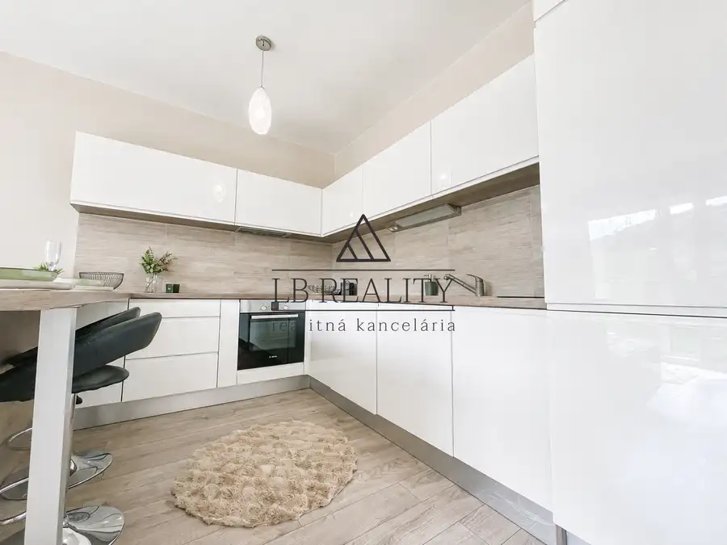
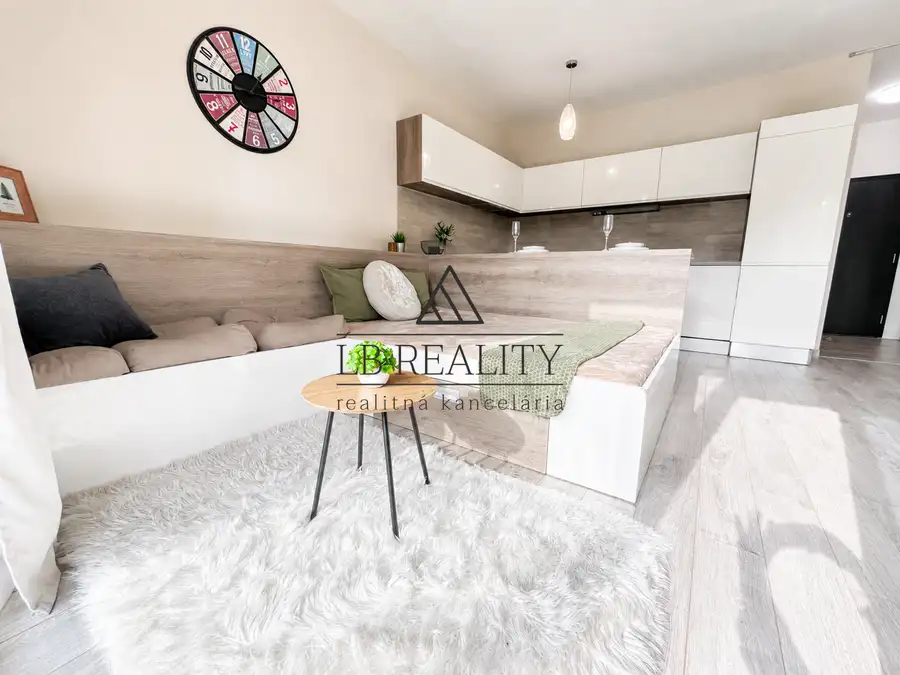
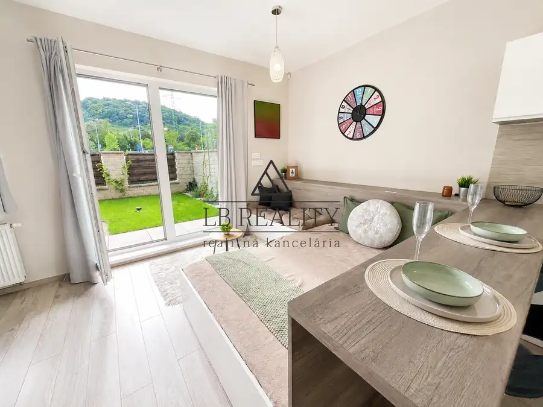
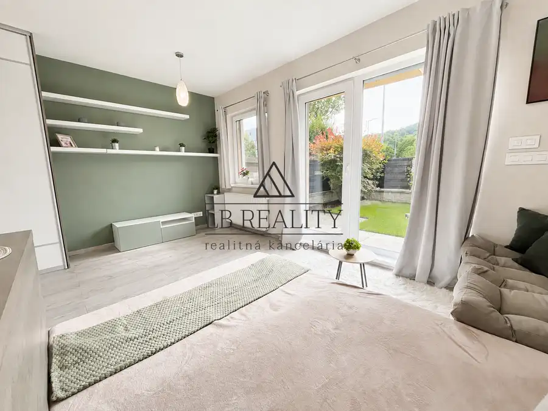
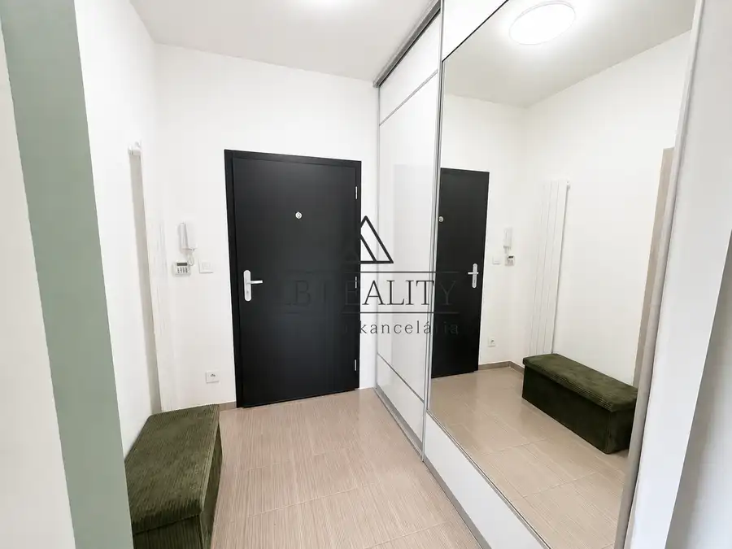
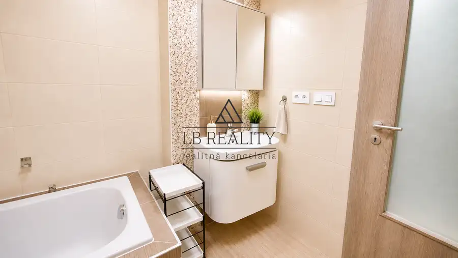
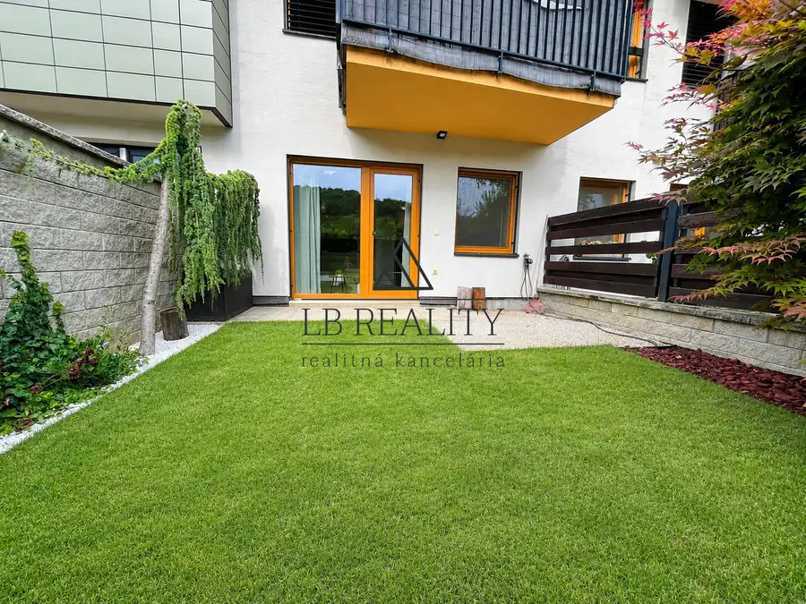

1-izbový byt s predzáhradkou, kompletne zariadený, M. Schneidra Trnavského, Dúbravka.
Dúbravka, Bratislava







- Dispozícia1-izbový
- Plocha37 m²
- Poschodie1. z 4
- StavNovostavba
O nehnuteľnosti
Ponúkame na predaj precízne navrhnutý 1 izbový byt predzáhradkou s výhľadom na zeleň na prízemí rezidenčného projektu ROSNIČKA (kolaudácia 2017), ulica Mikuláša Schneider Trnavského, Dúbravka, Bratislava IV. Rozloha bytu 37 m2 + predzáhradka 28 m2.Bytový dom sa nachádza v príjemnej lokalite na rozmedzí Karlovej Vsi a Dúbravky vsadený do prírodného prostredia, ktorá ponúka pokojné bývanie s príjemnou atmosférou. Obyvateľom bytového domu je k dispozícii átrium s detským ihriskom. Okolie bytovky je upravené s dôrazom na zeleň, čo vytvára ideálne miesto na oddych.Samotný byt je veľmi zaujímavo dizajnový a zariadený nábytkom na mieru, ktorý novému obyvateľovi poskytne prijemné prostredie na život. Kuchynská linka je plne vybavená spotrebičmi - umývačka riadu, práčka, el. rúra a sporák, chladnička s mrazničkou. Dostatočný úložný priestor poskytujú 2 vstavané skrine. Izbe dominuje sedenie na mieru s úložným priestorom a spacím lôžkom o rozlohe 1,60 m. K bytu prislúcha predzáhradka s juho-západnou orientáciou o rozlohe 28 m2 s trávnikom, posedením a vonkajším osvetlením, ktorá ponúka súkromný priestor na relax, rannú kávu či posedenie.Dispozične je byt prakticky riešený – obývacia časť s výstupom na predzáhradku je prepojená s kuchyňou, kúpeľňa a vstupná chodba.Hlavné výhody:- mala bytovka v tichom prírodnom prostredí - atraktívne upravené okolie domu- úspora mesačných nákladov vďaka fotovoltike v bytovom dome- predzáhradka s posedením- svetlý, slnečný byt, orientácia JZ- alarm- vonkajšie žalúzie s elektrickým ovládaním- plastové okná s 3-sklom- kompletné zariadenie v cene - umývačka riadu - v kúpeľni je vaňa- pokojná a vyhľadávaná lokalita OKOLIE:byt sa nachádza vo vyhľadávanej a pokojnej časti, v bezprostrednej blízkostiKúpalisko Rosnička, ktoré je situované v príjemnom prostredí Malých Karpát. Športový areál a štadión v pešej dostupnosti k dispozícii pre verejnosť na športové aktivity, Dobré dopravné spojenie - zastavka električky a autobusu 2 minútky od domu, rýchle napojenie na D1, D2. Pešou dostupnosťou KAUFLAND.Byt je ideálnou voľbou pre jednotlivca alebo pár, ktorí hľadajú harmonické bývanie v spojení s prírodou, no zároveň s dobrou dostupnosťou do mesta. Ponuka je výhodná aj ako investícia.Neváhajte nás kontaktovať a dohodnite si obhliadku – tento byt vás očarí svojou atmosférou.KONTAKT: Katarína Blažeková - LB Realityrealitný maklérkontakt: 0917 886 950e-mail: katarina@lbreality.sk
Parametre
- Cena vrátane energií
- Nie
- Druh
- 1 izbový byt
- Dátum zverejnenia
- 23. 03. 2026
- Energetický certifikát budovy
- nie je
- Orientácia
- Juhozápadná
- Plocha predzáhradky
- 28 m²
- Podlažie
- 1
- Počet nadzemných podlaží
- 4
- Rok výstavby
- 2017
- Stav nehnuteľnosti
- Novostavba
- Typ
- Predaj
- Typ konštrukcie
- Zmiešaná
- Vybavenie
- Predzáhradka, Verejné parkovanie
- Úžitková plocha
- 37 m²